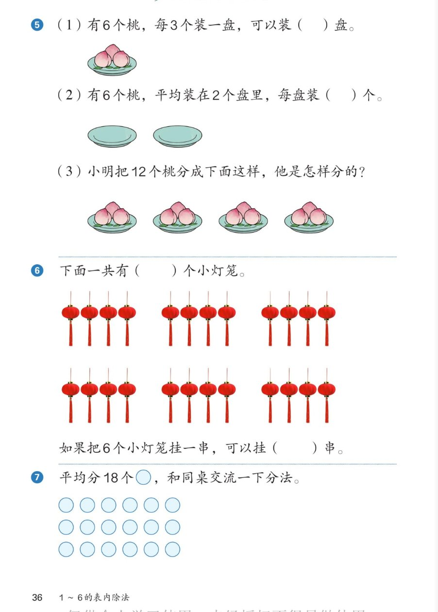

🔊 1~6的表内除法 · 课本第 36 页 · 练一练 5~7
人教版《数学》二年级上册 · 有声图文带读 · 先想后看解析
题数
6
认知
2
强化
3
拓展
1
本页重点
每3个一盘与平均2盘·数灯笼·开放平均分
🎧 分两步学：
① 解析教材图片
——纯声音读图，读到哪一块哪一块闪动提示；关键处先倒计时让你思考，再在图片下方给出解析并朗读。
② 分层提问练习
——六道分层题（认知 / 强化 / 拓展），先思考再展开解析、朗读参考答案；这一步不再回到图片。
也可以随时点任意一句话、图上任意一块单独听；点课本文字卡还会展开答案。
教材图片（点块听读，读到哪块哪块闪）

📖 人教版《数学》二年级上册 · 课本第 36 页 练一练 · 图片仅供个人学习，版权归人民教育出版社所有
🤔 想一想（点我可跳过）
课本的文字（点句子：听读 + 看答案）
课本第 5 题（1）（2）
6 个桃：每 3 个一盘？平均装 2 盘？
看答案 ▾
（1）
每 3 个装一盘 → 装
2
盘（6 里有 2 个 3）；
（2）
平均装 2 盘 → 每盘
3
个（2×3=6）。
🌈 都是 6 和 3：一个求份数，一个求每份数
课本第 5 题（3）
小明把 12 个桃分成 4 盘，每盘 3 个
看答案 ▾
图上
4
个盘子、每盘
3
个桃，正好 12 个。
说法一：每 3 个装一盘，装了
4
盘；
说法二：平均分成
4
份，每份
3
个。
课本第 6 题
灯笼：一共（ ）个；6 个挂一串，挂（ ）串
看答案 ▾
一共
24
个灯笼（6 串、每串 4 个，6×4=24）；
6 个挂一串：24 里面有
4
个 6 → 挂
4
串。
课本第 7 题
平均分 18 个圆片，说说你的分法
看答案 ▾
分法不唯一：
每份 2 个 →
9
份；每份 3 个 →
6
份；
每份 6 个 →
3
份；每份 9 个 →
2
份。
🌈 想乘法：几 × 几 = 18，就有一种分法
分层提问练习（先想后看解析）
🍑
认知
6 个桃每 3 个装一盘，可以装几盘？
看解析
🤔 想一想
解析：
2 盘
：6 里面有
2
个 3，想 3×2=6。
🔄
认知
平均装 2 盘每盘几个？这两小题有什么不同？
看解析
🤔 想一想
解析：
每盘
3
个（2×3=6）。
（1）知道
每份数
求
份数
；（2）知道
份数
求
每份数
——正好反过来。
🍽️
强化
小明把 12 个桃是怎样分的？用两种说法讲一讲。
看解析
🤔 想一想
解析：
说法一：每
3
个装一盘，装了
4
盘；
说法二：平均分成
4
份，每份
3
个。
💡 同一幅图，两种平均分的眼光
🏮
强化
下面一共有多少个小灯笼？怎么数又快又准？
看解析
🤔 想一想
解析：
一共
24
个：6 串、每串 4 个，
6×4=24
。
💡 串串同样多，用乘法数最快
🧧
强化
如果 6 个小灯笼挂一串，可以挂几串？
看解析
🤔 想一想
解析：
4 串
：24 里面有
4
个 6，想 6×4=24。
🌈
拓展
18 个圆片可以怎样平均分？说出至少两种分法。
看解析
🤔 想一想
解析：
每份 2 个 →
9
份；每份 3 个 →
6
份；
每份 6 个 →
3
份；每份 9 个 →
2
份。
🌈 只要每份同样多、正好分完，都是平均分
① 解析教材图片
② 分层提问练习
⏹ 停止
纯声音 + 高亮跟随 · 想好才出解析
← 返回导航